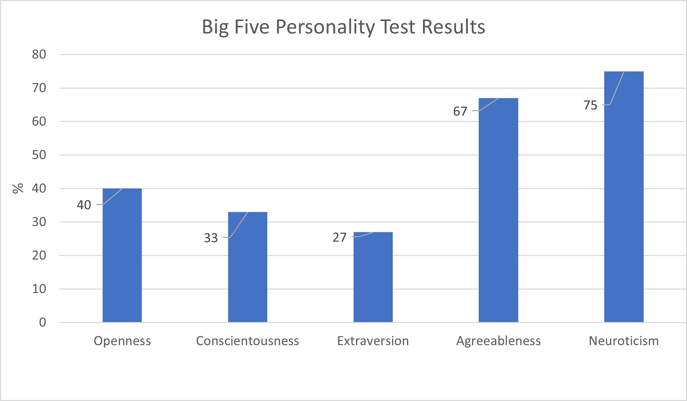

COSC1078 Assignment 1: My Profile
Personal Information
Name: Cameron Mitchell
Student Number: s3971747
Student Email: s3971747@student.rmit.edu.au
 Information: Born and raised in Australia, I have completed Year 12 and previously studied Engineering and Computer Science and Monash (4 years). I only know how to speak English.
Information: Born and raised in Australia, I have completed Year 12 and previously studied Engineering and Computer Science and Monash (4 years). I only know how to speak English.
Fun fact: I have won a football grand final in 2013, in which my dad was the coach.
Interest in IT
My IT interest started when I was in primary school, when I was about 9 to 10 years old, where I became the M.I.C.E (Mentor in Computer Education) for my class. My role was to look after the school computers, while doing extra learning about computer systems. After this, I started to play video games, and really enjoyed the idea of working with computers in the future.
I chose to come to RMIT because I felt like I needed to switch up my approach to studying. Previously studying at Monash during the pandemic, I felt like I was in a slump and needed to find a way out. After thinking about what I wanted to do, I decided that RMIT was the best place to study IT. I have a few friends who studied at RMIT, and they enjoyed their time here, so I thought I should study here too.
I expect to learn many things while studying IT, both in the IT field and general career skills. Some IT skills I would like to learn are how to code and create a video game, as well as being able to understand a lot about IT networks and information management. Some career skills to learn would be how to effectively communicate my thoughts, work as a team more efficiently, and understand what my colleagues require of me.
Ideal Job
My ideal job would involve something to do with video games, either playing, creating or testing them. After doing some research about what I would like to do as my future job, I have found a job description that sounds appealing to me. The job is a 'Quality Assurance Tester', working for the company Tantalus Media.
Click here to view the job listing.

The job is one where you work with companies to take an in-depth look at the video game's code to figure out what is wrong with it. You also communicate with those that are/have invested in the project as to the currect progress of the development. Within this role, you are working with others to report back to the ehad of the team you are assigned to.
The job has many different requirements in regards to skills and qualification. Employers are looking for people that have at least 2 years of experience working in game software development, with a preference of 3-4 years, and are able to set priorities for themselves, while completing a wide range of tasks simultaneously. The company also prefers if potential employees have recent experience working with console and PC development projects. Some other requirements for the job include the ability to communicate effectively, attention to detail, and the ability to understand different softwares used for project management and bug tracking.
Currently, I have a minial understanding and experience working with game development, as I have previously made a video game for a high school class. I am not the greatest at multi-tasking and setting priorities, as I often get distracted by friends, videos or other things. I do have a hard time communicating effectively, but I can express myself averagely, while my attention to detail is relatively good. Having previously studied Computer Science, my understanding with debugging is minimal.
Throughout my studies, I plan to obtain the base skills necessary for a job like this. By taking different courses related to the requirements, I will be able to obtain the skills to find myself in a position to search for an entry level job in game development. After finding said job, while working for about 3 years, I should have developed the skillset required to obtain this 'Quality Assurance Tester' role.
Personal Profile
These images show the results of three different online quiz's that are commonly used by employers. Click on the images to take the tests yourself!



These three quiz's show that I am quite introverted, with a tendency to get distracted and prone to negative emotions, such as stress. Being an auditory learner, it is easier to learn through listening to others explain, or reading out learning material. I can be quick to agree with others, and can be flexible when team members are required to complete other tasks. Teamwork is an important factor when it comes to working in IT, and some of these attributes may be considered a hindrance, such as getting distracted.
Project Idea
CLick Here to view the Project Idea page
References